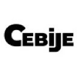
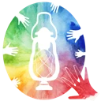

À propos
Designer UI/UX avec profil front-end, je conçois des interfaces lisibles, utiles et soignées, avec une attention particulière portée au rythme, à la structure et à la qualité d’exécution.
Bonjour 👋
Designer UI/UX avec profil front-end, je conçois des interfaces qui doivent se comprendre vite, bien s’utiliser et tenir dans le temps.
Mon parcours mêle design, intégration et création sonore. Cette transversalité m’a appris à travailler autant la hiérarchie visuelle que le rythme d’usage, les transitions et la finition.
Ma philosophie
Je conçois des interfaces qui doivent être claires sans être froides, structurées sans être rigides, et agréables à utiliser sans surcharger l’expérience.
J’aime prolonger le design jusqu’à l’intégration quand c’est pertinent, pour vérifier qu’une intention fonctionne aussi dans l’interface réelle. Mon objectif est de produire des expériences utiles, cohérentes et bien exécutées, où chaque choix a une fonction.
Compétences
Design graphique
- Photoshop
- Illustrator
- InDesign
- Figma
- Aseprite
Montage et mixage son
- Pro Tools
- Logic Pro
- Ableton Live
- Wwise
- FMOD
Montage vidéo
- After Effects
- Final Cut Pro
- DaVinci Resolve
- OBS
Langages de codage
- HTML
- CSS
- JavaScript
- Python
- Swift
Outils & environnements
- Microsoft Office
- Notion
- GitHub
- Xcode
Langues
- Français — Courant
- Anglais — C1
- Espagnol — B1
Expérience
Réalisation d’une trentaine de projets de montage son et de mixage pour podcasts, animation et formats audiovisuels, avec une attention forte portée à l’intelligibilité, au rythme et à la qualité de finition.
Assistance aux sessions de mixage et à la logistique studio, avec en parallèle la conception et le développement d’une plateforme web de dépôt de livrables audio pour fiabiliser la réception et le classement des fichiers.
Accompagnement d’élèves débutants à intermédiaires en cours particuliers, avec une approche pédagogique progressive, structurée et adaptée à chaque profil.

CEBIJE (Stage)Accueil et accompagnement des artistes en studio, participation aux enregistrements et aux mixages, avec une attention portée à la qualité d’écoute et au bon déroulement des sessions.
Accompagnement d’adolescents en difficulté au collège Les Ormeaux, animation d’ateliers et gestion de groupe, avec un travail centré sur la pédagogie, l’écoute et la clarté des consignes.

COCO & CO PROD (Stages)Montage et mixage d’un épisode de podcast consacré au témoignage d’un rescapé de la fusillade de Columbine, avec un travail de condensation, de rythme et d’intelligibilité sur un récit long en anglais.
Traitement et suivi des demandes de remboursement, contrôle de conformité des dossiers et résolution de litiges, dans un cadre exigeant rigueur, fiabilité et clarté de traitement.
Conception de maquettes web et mobile pour Suivea, avec un travail sur l’identité visuelle, la clarté de l’interface et la cohérence entre logo, UI et futurs développements front-end.
Formations
- 2024-2025 Bachelor Chef Opérateur son à l’EICAR Paris
- 2024 Diplôme de Sound Design à Studio M Paris
- 2021 Diplôme MMI à l’IUT de Vélizy obtenu
- 2019 Baccalauréat S au lycée Lakanal à Sceaux
- 2019 CEM, 3ème cycle de piano et de solfège au Conservatoire de Boulogne-Billancourt avec mention bien
- 2011-2013 Diplôme 1er et 2ème cycle de piano au Conservatoire de Fontenay aux Roses avec mention très bien à l’unanimité avec félicitations du jury
Intérêts
- La musique : piano, composition, avec une préférence pour le classique et l’orchestral.
- Le design produit et l’innovation UI/UX : veille active sur l’écosystème Apple et les grandes tendances, du Liquid Glass aux évolutions d’interaction mobile.
- Les jeux vidéo : du pixel art indé aux grandes productions, en passant par les classiques SNES (romhacks, randomizers et modifications personnelles sur Super Metroid et Super Mario World).
- Le sport : VTT, natation, escalade, taekwondo.
Discutons de votre projet
Je suis toujours ouvert à de nouvelles opportunités et collaborations.
Me contacter